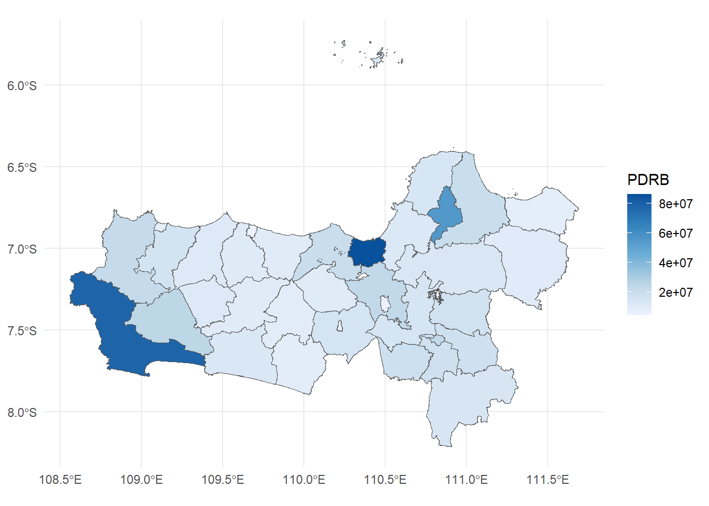
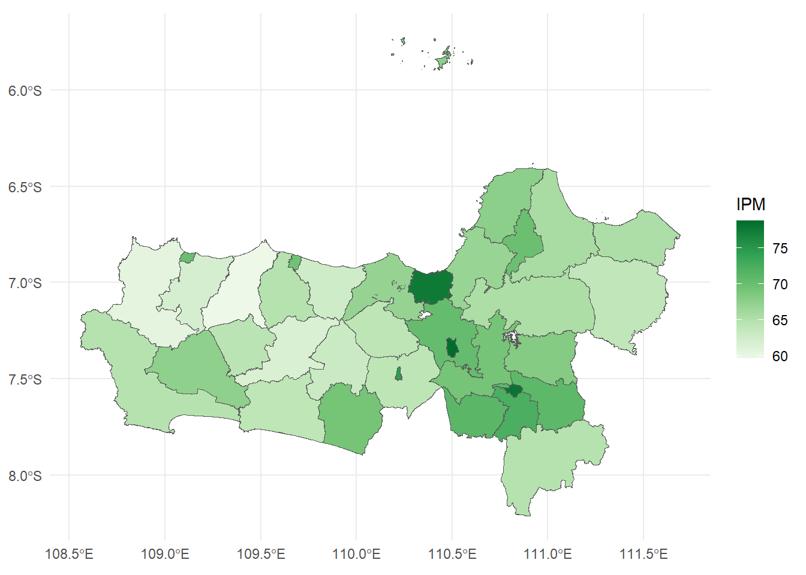

6 Spatial Regression
6.1 Library
# install.packages("spdep")
# install.packages("spatialreg")
# install.packages("RColorBrewer")
# install.packages("splm")
# install.packages("sf")
# install.packages("ggplot2")
library(spdep)
#> Warning: package 'spdep' was built under R version 4.2.3
#> Loading required package: spData
#> Warning: package 'spData' was built under R version 4.2.3
#> To access larger datasets in this package, install
#> the spDataLarge package with:
#> `install.packages('spDataLarge',
#> repos='https://nowosad.github.io/drat/',
#> type='source')`
#> Loading required package: sf
#> Warning: package 'sf' was built under R version 4.2.3
#> Linking to GEOS 3.9.3, GDAL 3.5.2, PROJ 8.2.1; sf_use_s2()
#> is TRUE
library(spatialreg)
#> Warning: package 'spatialreg' was built under R version
#> 4.2.3
#> Loading required package: Matrix
#> Warning: package 'Matrix' was built under R version 4.2.3
#>
#> Attaching package: 'spatialreg'
#> The following objects are masked from 'package:spdep':
#>
#> get.ClusterOption, get.coresOption, get.mcOption,
#> get.VerboseOption, get.ZeroPolicyOption,
#> set.ClusterOption, set.coresOption, set.mcOption,
#> set.VerboseOption, set.ZeroPolicyOption
library(RColorBrewer)
library(splm)
#> Warning: package 'splm' was built under R version 4.2.3
library(sf)
library(ggplot2)
#> Warning: package 'ggplot2' was built under R version 4.2.36.2 Cross-Section
library(readxl)
#> Warning: package 'readxl' was built under R version 4.2.3
provinsi <- read_excel("Data/Bab6/provinsi Indonesia.xlsx")
head(provinsi)
#> # A tibble: 6 × 5
#> province pdrb investment infra revenue
#> <chr> <dbl> <dbl> <dbl> <dbl>
#> 1 Aceh 129093. 4485. 0.37 11694.
#> 2 Sumut 571722. 21477. 0.52 8481.
#> 3 Sumbar 179952. 2340. 0.52 4052.
#> 4 Riau 652762. 18957. 0.28 6911.
#> 5 Jambi 155066. 5026. 0.26 3130.
#> 6 Sumsel 331766. 19853. 0.2 5990.6.2.1 OLS Model
model1 = log(pdrb) ~ log(investment) + log(infra) + log(revenue)
ols = lm(model1, data=provinsi)
summary(ols)
#>
#> Call:
#> lm(formula = model1, data = provinsi)
#>
#> Residuals:
#> Min 1Q Median 3Q Max
#> -0.82306 -0.33812 0.00604 0.32399 0.83581
#>
#> Coefficients:
#> Estimate Std. Error t value Pr(>|t|)
#> (Intercept) 3.95883 0.85379 4.637 6.48e-05 ***
#> log(investment) 0.42187 0.08375 5.037 2.10e-05 ***
#> log(infra) 0.24988 0.07807 3.201 0.00323 **
#> log(revenue) 0.53807 0.15207 3.538 0.00133 **
#> ---
#> Signif. codes:
#> 0 '***' 0.001 '**' 0.01 '*' 0.05 '.' 0.1 ' ' 1
#>
#> Residual standard error: 0.4094 on 30 degrees of freedom
#> Multiple R-squared: 0.8883, Adjusted R-squared: 0.8771
#> F-statistic: 79.53 on 3 and 30 DF, p-value: 2.226e-146.2.2 Weight Matrix
migrasi <- read_excel("Data/Bab6/matriks migrasi.xlsx", sheet = 2, col_names = FALSE)
#> New names:
#> • `` -> `...1`
#> • `` -> `...2`
#> • `` -> `...3`
#> • `` -> `...4`
#> • `` -> `...5`
#> • `` -> `...6`
#> • `` -> `...7`
#> • `` -> `...8`
#> • `` -> `...9`
#> • `` -> `...10`
#> • `` -> `...11`
#> • `` -> `...12`
#> • `` -> `...13`
#> • `` -> `...14`
#> • `` -> `...15`
#> • `` -> `...16`
#> • `` -> `...17`
#> • `` -> `...18`
#> • `` -> `...19`
#> • `` -> `...20`
#> • `` -> `...21`
#> • `` -> `...22`
#> • `` -> `...23`
#> • `` -> `...24`
#> • `` -> `...25`
#> • `` -> `...26`
#> • `` -> `...27`
#> • `` -> `...28`
#> • `` -> `...29`
#> • `` -> `...30`
#> • `` -> `...31`
#> • `` -> `...32`
#> • `` -> `...33`
#> • `` -> `...34`
migrasi = as.matrix(migrasi)
W.migrasi = mat2listw(migrasi)
#> Warning in mat2listw(migrasi): style is M (missing); style
#> should be set to a valid value6.2.3 Moran Test and Plot
moran.lm = lm.morantest(ols, W.migrasi)
moran.lm
#>
#> Global Moran I for regression residuals
#>
#> data:
#> model: lm(formula = model1, data = provinsi)
#> weights: W.migrasi
#>
#> Moran I statistic standard deviate = 3.4669, p-value
#> = 0.0002632
#> alternative hypothesis: greater
#> sample estimates:
#> Observed Moran I Expectation Variance
#> 0.213239417 -0.048308437 0.005691365
moran.plot(ols$residuals, W.migrasi)
6.2.4 LM Test
LM = lm.LMtests(ols, W.migrasi, test="all")
#> Please update scripts to use lm.RStests in place of lm.LMtests
#> Warning in lm.RStests(model = model, listw = listw,
#> zero.policy = zero.policy, : Spatial weights matrix not row
#> standardized
LM
#>
#> Rao's score (a.k.a Lagrange multiplier) diagnostics
#> for spatial dependence
#>
#> data:
#> model: lm(formula = model1, data = provinsi)
#> test weights: listw
#>
#> RSerr = 5.4456, df = 1, p-value = 0.01962
#>
#>
#> Rao's score (a.k.a Lagrange multiplier) diagnostics
#> for spatial dependence
#>
#> data:
#> model: lm(formula = model1, data = provinsi)
#> test weights: listw
#>
#> RSlag = 3.2163, df = 1, p-value = 0.07291
#>
#>
#> Rao's score (a.k.a Lagrange multiplier) diagnostics
#> for spatial dependence
#>
#> data:
#> model: lm(formula = model1, data = provinsi)
#> test weights: listw
#>
#> adjRSerr = 3.0702, df = 1, p-value = 0.07974
#>
#>
#> Rao's score (a.k.a Lagrange multiplier) diagnostics
#> for spatial dependence
#>
#> data:
#> model: lm(formula = model1, data = provinsi)
#> test weights: listw
#>
#> adjRSlag = 0.84087, df = 1, p-value = 0.3591
#>
#>
#> Rao's score (a.k.a Lagrange multiplier) diagnostics
#> for spatial dependence
#>
#> data:
#> model: lm(formula = model1, data = provinsi)
#> test weights: listw
#>
#> SARMA = 6.2865, df = 2, p-value = 0.043146.2.5 SAR Model
sar.provinsi = lagsarlm(model1, data=provinsi, W.migrasi)
summary(sar.provinsi)
#>
#> Call:
#> lagsarlm(formula = model1, data = provinsi, listw = W.migrasi)
#>
#> Residuals:
#> Min 1Q Median 3Q Max
#> -0.679482 -0.291161 -0.083437 0.336403 0.808845
#>
#> Type: lag
#> Coefficients: (asymptotic standard errors)
#> Estimate Std. Error z value Pr(>|z|)
#> (Intercept) 1.744150 1.437574 1.2133 0.2250310
#> log(investment) 0.380784 0.079364 4.7979 1.603e-06
#> log(infra) 0.207431 0.073675 2.8155 0.0048701
#> log(revenue) 0.529174 0.136397 3.8797 0.0001046
#>
#> Rho: 0.21114, LR test value: 3.0033, p-value: 0.083096
#> Asymptotic standard error: 0.12002
#> z-value: 1.7592, p-value: 0.07854
#> Wald statistic: 3.0949, p-value: 0.07854
#>
#> Log likelihood: -14.24739 for lag model
#> ML residual variance (sigma squared): 0.13454, (sigma: 0.36679)
#> Number of observations: 34
#> Number of parameters estimated: 6
#> AIC: 40.495, (AIC for lm: 41.498)
#> LM test for residual autocorrelation
#> test value: 2.5558, p-value: 0.109896.2.6 Impacts (Spillover)
impacts(sar.provinsi, listw=W.migrasi)
#> Impact measures (lag, exact):
#> Direct Indirect Total
#> log(investment) 0.3831961 0.09950271 0.4826988
#> log(infra) 0.2087457 0.05420401 0.2629497
#> log(revenue) 0.5325268 0.13827873 0.67080556.2.7 SEM Model
sem.provinsi = errorsarlm(model1, data=provinsi, W.migrasi)
summary(sem.provinsi)
#>
#> Call:
#> errorsarlm(formula = model1, data = provinsi, listw = W.migrasi)
#>
#> Residuals:
#> Min 1Q Median 3Q Max
#> -0.770148 -0.273480 -0.020662 0.325690 0.647156
#>
#> Type: error
#> Coefficients: (asymptotic standard errors)
#> Estimate Std. Error z value Pr(>|z|)
#> (Intercept) 3.831947 0.772493 4.9605 7.031e-07
#> log(investment) 0.410266 0.072801 5.6354 1.746e-08
#> log(infra) 0.209178 0.071237 2.9364 0.003321
#> log(revenue) 0.550807 0.132071 4.1705 3.039e-05
#>
#> Lambda: 0.60794, LR test value: 5.1345, p-value: 0.023455
#> Asymptotic standard error: 0.19219
#> z-value: 3.1632, p-value: 0.0015604
#> Wald statistic: 10.006, p-value: 0.0015604
#>
#> Log likelihood: -13.18178 for error model
#> ML residual variance (sigma squared): 0.11956, (sigma: 0.34577)
#> Number of observations: 34
#> Number of parameters estimated: 6
#> AIC: 38.364, (AIC for lm: 41.498)6.3 Spatial Panel
library(readxl)
paneljateng <- read_excel("Data/Bab6/panel jateng.xlsx")
head(paneljateng)
#> # A tibble: 6 × 8
#> Region Tahun PDRB AK PAD UMK IPM NO
#> <chr> <dbl> <dbl> <dbl> <dbl> <dbl> <dbl> <chr>
#> 1 Kab. Cilacap 2011 7.82e7 797518 1.73e5 7.19e5 64.7 01
#> 2 Kab. Cilacap 2012 7.97e7 716465 1.97e5 7.73e5 65.7 01
#> 3 Kab. Cilacap 2013 8.10e7 729059 2.79e5 8.88e5 66.8 01
#> 4 Kab. Cilacap 2014 8.34e7 736247 3.74e5 1.02e6 67.2 01
#> 5 Kab. Cilacap 2015 8.88e7 715819 4.10e5 1.20e6 67.8 01
#> 6 Kab. Banyum… 2011 2.45e7 761034 1.93e5 7.5 e5 67.4 026.3.1 Static Panel Regression
library(plm)
#> Warning: package 'plm' was built under R version 4.2.3
modelpanel = log(PDRB) ~ log(AK) + log(PAD) + log(UMK) + log(IPM)
fem1 = plm(modelpanel, data=paneljateng, index=c("Region", "Tahun"), model="within")
rem1 = plm(modelpanel, data=paneljateng, index=c("Region", "Tahun"), model="random")
phtest(fem1, rem1)
#>
#> Hausman Test
#>
#> data: modelpanel
#> chisq = 37.156, df = 4, p-value = 1.673e-07
#> alternative hypothesis: one model is inconsistent
library(lmtest)
#> Loading required package: zoo
#> Warning: package 'zoo' was built under R version 4.2.3
#>
#> Attaching package: 'zoo'
#> The following objects are masked from 'package:base':
#>
#> as.Date, as.Date.numeric
bptest(fem1)
#>
#> studentized Breusch-Pagan test
#>
#> data: fem1
#> BP = 5.8081, df = 4, p-value = 0.2139
pbgtest(fem1)
#>
#> Breusch-Godfrey/Wooldridge test for serial
#> correlation in panel models
#>
#> data: modelpanel
#> chisq = 51.619, df = 5, p-value = 6.458e-10
#> alternative hypothesis: serial correlation in idiosyncratic errors6.3.2 Depndency Test
pcdtest(fem1, test="lm")
#>
#> Breusch-Pagan LM test for cross-sectional dependence
#> in panels
#>
#> data: log(PDRB) ~ log(AK) + log(PAD) + log(UMK) + log(IPM)
#> chisq = 1268.3, df = 595, p-value < 2.2e-16
#> alternative hypothesis: cross-sectional dependence
pcdtest(fem1, test="cd")
#>
#> Pesaran CD test for cross-sectional dependence in
#> panels
#>
#> data: log(PDRB) ~ log(AK) + log(PAD) + log(UMK) + log(IPM)
#> z = 12.724, p-value < 2.2e-16
#> alternative hypothesis: cross-sectional dependence6.3.3 Maps Visualization
jateng.map = st_read('Data/Bab6/peta jateng/Jawa_Tengah.shp')
#> Reading layer `Jawa_Tengah' from data source
#> `D:\Project\_2024\Bookdown Ekonometrika\ds-econometrics\Data\Bab6\peta jateng\Jawa_Tengah.shp'
#> using driver `ESRI Shapefile'
#> Simple feature collection with 35 features and 4 fields
#> Geometry type: MULTIPOLYGON
#> Dimension: XY, XYZ
#> Bounding box: xmin: 108.5559 ymin: -8.211962 xmax: 111.6914 ymax: -5.725698
#> z_range: zmin: 0 zmax: 0
#> Geodetic CRS: WGS 84
jateng2011 = subset(paneljateng,(Tahun==2011))
jateng2011 = merge(jateng.map, jateng2011, by.x="KABKOTNO", by.y="NO")
jateng2011 <- st_make_valid(jateng2011)
ggplot(jateng2011) +
geom_sf(aes(fill = PDRB)) +
scale_fill_gradientn(colours = brewer.pal(5, "Blues"),
values = scales::rescale(seq(min(jateng2011$PDRB),
max(jateng2011$PDRB)*1.01,
length = 6))) +
theme_minimal() +
labs(fill = "PDRB")
ggplot(jateng2011) +
geom_sf(aes(fill = IPM)) +
scale_fill_gradientn(colours = brewer.pal(5, "Greens"),
values = scales::rescale(seq(min(jateng2011$IPM),
max(jateng2011$IPM)*1.01,
length = 6))) +
theme_minimal() +
labs(fill = "IPM")
6.3.4 Function for Spatial Panel Evalutation
godf.spml<-function(object, k=2, criterion=c("AIC", "BIC"), ...){
s<-summary(object)
l<-s$logLik
np<- length(coef(s))
N<- nrow(s$model)
if(criterion=="AIC"){
aic<- -2*l+k*np
names(aic)<-"AIC"
return(aic)
}
if(criterion=="BIC"){
bic<- -2*l+log(N)*np
names(bic)<-"BIC"
if(k!=2){
warning("parameter <k> not used for BIC")
}
return(bic)
}
}6.3.5 Spatial Panel Model with Contiguity Weight Matrix
jateng.map <- st_make_valid(jateng.map)
listqueen = poly2nb(jateng.map, queen=TRUE)
W.queen = nb2listw(listqueen, style="W")
W.queen
#> Characteristics of weights list object:
#> Neighbour list object:
#> Number of regions: 35
#> Number of nonzero links: 148
#> Percentage nonzero weights: 12.08163
#> Average number of links: 4.228571
#>
#> Weights style: W
#> Weights constants summary:
#> n nn S0 S1 S2
#> W 35 1225 35 18.64242 151.0178
# SAR Model
sar.fem.contig = spml(modelpanel, data=paneljateng, listw=W.queen, model="within", lag=TRUE, spatial.error="none")
sar.rem.contig = spml(modelpanel, data=paneljateng, listw=W.queen, model="random", lag=TRUE, spatial.error="none")
sphtest(sar.fem.contig, sar.rem.contig)
#>
#> Hausman test for spatial models
#>
#> data: modelpanel
#> chisq = 0.15855, df = 4, p-value = 0.997
#> alternative hypothesis: one model is inconsistent
godf.spml(sar.rem.contig, criterion="AIC")
#> AIC
#> -703.0118
# SEM Model
sem.fem.contig = spml(modelpanel, data=paneljateng, listw=W.queen, model="within", lag=FALSE, spatial.error="b")
sem.rem.contig = spml(modelpanel, data=paneljateng, listw=W.queen, model="random", lag=FALSE, spatial.error="b")
sphtest(sem.fem.contig, sem.rem.contig)
#>
#> Hausman test for spatial models
#>
#> data: modelpanel
#> chisq = 5.4546, df = 4, p-value = 0.2438
#> alternative hypothesis: one model is inconsistent
godf.spml(sem.rem.contig, criterion="AIC")
#> AIC
#> -633.56116.3.6 Spatial Panel Model with KNN Weight Matrix
# K-nearest neighbour with 5 neighbour
centroids <- st_centroid(jateng.map)
#> Warning: st_centroid assumes attributes are constant over
#> geometries
coords <- st_coordinates(centroids)
neighbour = knearneigh(coords, k=5, longlat=T)
neighbourlist = knn2nb(neighbour)
mat.knn5 = nb2mat(neighbourlist, style="W")
W.knn5 = nb2listw(neighbourlist, style="W")
W.knn5
#> Characteristics of weights list object:
#> Neighbour list object:
#> Number of regions: 35
#> Number of nonzero links: 175
#> Percentage nonzero weights: 14.28571
#> Average number of links: 5
#> Non-symmetric neighbours list
#>
#> Weights style: W
#> Weights constants summary:
#> n nn S0 S1 S2
#> W 35 1225 35 12.44 144.48
# SAR Model
sar.fem.5nn = spml(modelpanel, data=paneljateng, listw=W.knn5, model="within", lag=TRUE, spatial.error="none")
sar.rem.5nn = spml(modelpanel, data=paneljateng, listw=W.knn5, model="random", lag=TRUE, spatial.error="none")
sphtest(sar.fem.5nn, sar.rem.5nn)
#>
#> Hausman test for spatial models
#>
#> data: modelpanel
#> chisq = 0.9208, df = 4, p-value = 0.9216
#> alternative hypothesis: one model is inconsistent
godf.spml(sar.rem.5nn, criterion="AIC")
#> AIC
#> -717.8954
# SEM Model
sem.fem.5nn = spml(modelpanel, data=paneljateng, listw=W.knn5, model="within", lag=FALSE, spatial.error="b")
sem.rem.5nn = spml(modelpanel, data=paneljateng, listw=W.knn5, model="random", lag=FALSE, spatial.error="b")
sphtest(sem.fem.5nn, sem.rem.5nn)
#>
#> Hausman test for spatial models
#>
#> data: modelpanel
#> chisq = 5.3246, df = 4, p-value = 0.2556
#> alternative hypothesis: one model is inconsistent
godf.spml(sem.rem.5nn, criterion="AIC")
#> AIC
#> -636.44326.3.7 Best Model
summary(sar.rem.5nn)
#> ML panel with spatial lag, random effects
#>
#> Call:
#> spreml(formula = formula, data = data, index = index, w = listw2mat(listw),
#> w2 = listw2mat(listw2), lag = lag, errors = errors, cl = cl)
#>
#> Residuals:
#> Min. 1st Qu. Median Mean 3rd Qu. Max.
#> 11.2 12.1 12.4 12.4 12.7 14.2
#>
#> Error variance parameters:
#> Estimate Std. Error t-value Pr(>|t|)
#> phi 4204.2 1174.1 3.5808 0.0003425 ***
#>
#> Spatial autoregressive coefficient:
#> Estimate Std. Error t-value Pr(>|t|)
#> lambda 0.750456 0.053411 14.05 < 2.2e-16 ***
#>
#> Coefficients:
#> Estimate Std. Error t-value Pr(>|t|)
#> (Intercept) 1.2042585 0.7177210 1.6779 0.093368 .
#> log(AK) 0.0474276 0.0241591 1.9631 0.049630 *
#> log(PAD) 0.0134898 0.0063019 2.1406 0.032306 *
#> log(UMK) 0.0470068 0.0167872 2.8002 0.005108 **
#> log(IPM) 0.3633197 0.1772088 2.0502 0.040342 *
#> ---
#> Signif. codes:
#> 0 '***' 0.001 '**' 0.01 '*' 0.05 '.' 0.1 ' ' 16.3.8 Impacts (Spillovr) - Only for SAR Model
# Direct and Indirect Effect
time = length(unique(paneljateng$Tahun))
sW.5knn = kronecker(Diagonal(time), listw2dgCMatrix(W.knn5))
set.seed(12345)
trMatc = trW(sW.5knn, type="mult")
imp = impacts(sar.rem.5nn, tr = trMatc, R = 200)
summary(imp, zstats=TRUE, short=T)
#> Impact measures (lag, trace):
#> Direct Indirect Total
#> log(AK) 0.05723256 0.1327900 0.19002256
#> log(PAD) 0.01627868 0.0377695 0.05404818
#> log(UMK) 0.05672481 0.1316119 0.18833673
#> log(IPM) 0.43843073 1.0172393 1.45567007
#> ========================================================
#> Simulation results ( variance matrix):
#> ========================================================
#> Simulated standard errors
#> Direct Indirect Total
#> log(AK) 0.02901319 0.08363074 0.10973883
#> log(PAD) 0.00734999 0.02062104 0.02706686
#> log(UMK) 0.02147235 0.08000097 0.09848155
#> log(IPM) 0.22893212 0.65960697 0.86733379
#>
#> Simulated z-values:
#> Direct Indirect Total
#> log(AK) 1.994006 1.693123 1.817494
#> log(PAD) 2.422577 2.079525 2.242148
#> log(UMK) 2.675301 1.800563 2.045985
#> log(IPM) 1.772328 1.503276 1.611045
#>
#> Simulated p-values:
#> Direct Indirect Total
#> log(AK) 0.0461514 0.090432 0.069142
#> log(PAD) 0.0154108 0.037569 0.024952
#> log(UMK) 0.0074662 0.071772 0.040758
#> log(IPM) 0.0763402 0.132768 0.107170